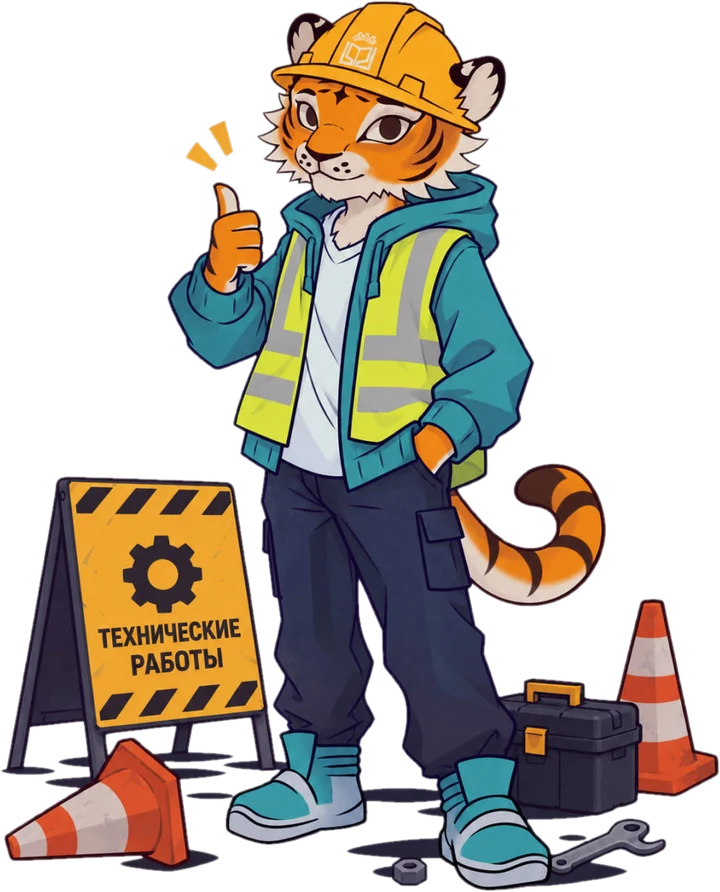

Вектор чинит журнал
Ставим обновление и проверяем, что всё работает как надо. Обычно это несколько минут.
Подкручиваем гайки в расписании…
Оценки, расписание и переписка в сохранности — ничего не пропадёт.
Программа для Windows продолжает работать с журналом без сети и отправит изменения, когда сайт вернётся. Страница обновится сама.
